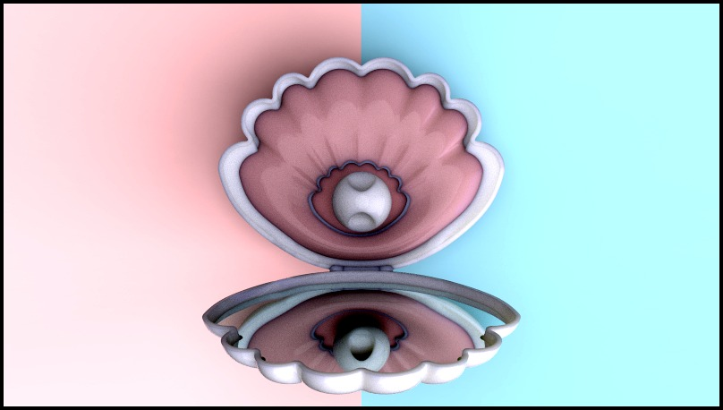

A / Lab Case
设计实验室式短案例
最贴合当前作品集。把粉色素材放进 graphite 实验室系统里，用标注、结构拆解和小图矩阵压住甜美感。
Graphite
Titanium Green
Shell Pink as signal
首屏
左侧一句话洞察，右侧打开状态大图；下方露出结构分解卡片。
页面节奏
Hero → Insight → Part stack → Details → Reflection，控制在短案例长度。
最强点
和鼠标项目风格统一，适合直接并入当前 Next.js 作品集。